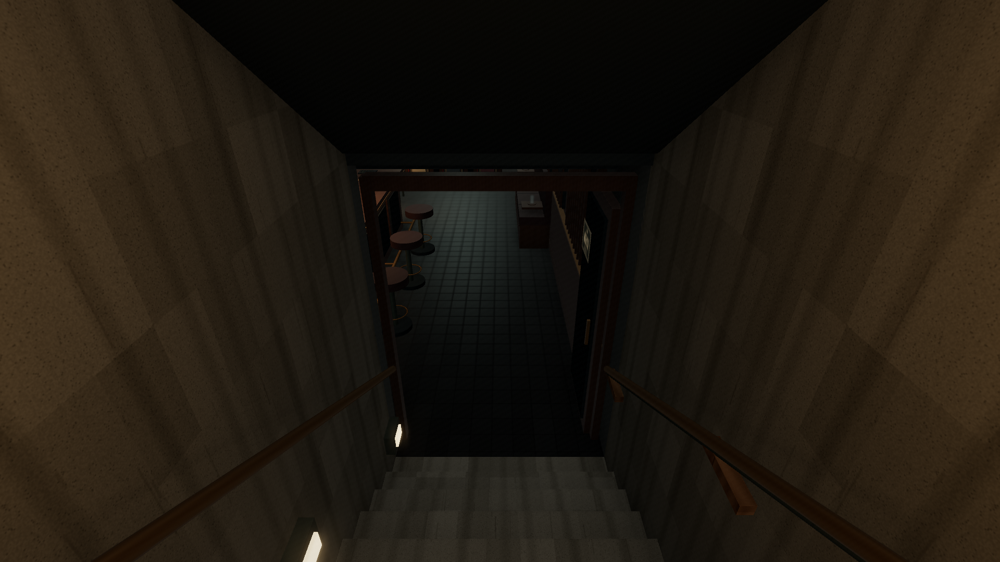

深度 / SHINDO
A clean, enclosed descent
The black wall bands were asphalt and background-terrain slab edges ending on the plaster's inner face. Both ground cuts now terminate inside the retaining walls. Disabling shadows and contact shading did not remove the old bands; moving the actual slab edges did. Camera near plane, depth settings and contact shading remain unchanged.
The approach also has one supported handrail per side, closed rail returns, attached wall lamps, clearer stair nosings and a finished landing threshold. The entrance transom is closed, the held-open leaf meets its frame, and the exit sign has a real mounting surface. Side hardware has matching player collision reservations.
Matched before / after
Actual WebGL captures: seed 8412, 21:00, damp pavement, reflections, simulation second 300. Each pair retains the camera transform, FOV and rendering conditions.
The geometry-only correction

Intermediate check: original plaster, fittings and lighting, with only the slab edges recessed. The former bands are gone.
Actual walking camera
Live walking-controller descent and return, at a 64° gameplay lens. No traversal teleports or personal audio in the recording.
TypeScript, production build and all 94 regression tests passed. Browser checks verified 16 wall rays at the former slab bands, all eight ground pieces, exactly two long grips, and 66 floor/headroom samples through the real stair and room route. City obstacles, business doors and station contracts match the baseline; no asset or shader errors.
Return to Shinmachi · Measured checks